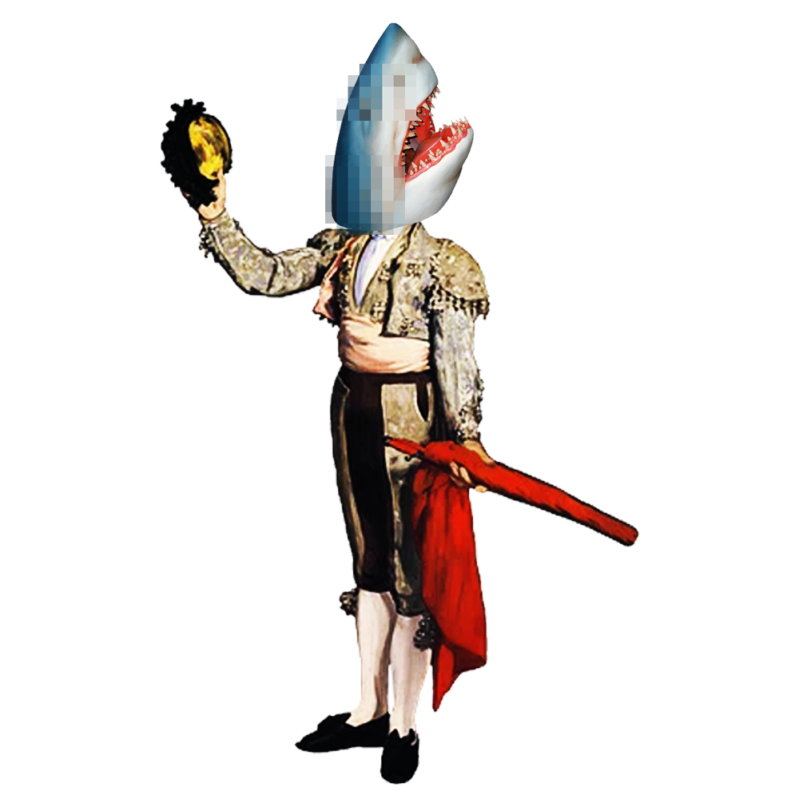

In media, psychopathy has been sensationalized as the embodiment of evil. Popular culture tends to portray psychopaths as cold-blooded killers, criminal masterminds, or monsters devoid of humanity. Iconic examples include Hannibal Lecter in The Silence of the Lambs (1991), Patrick Bateman in American Psycho (2000), and Anton Chigurh in No Country for Old Men (2007). These characters are intelligent, manipulative, and ruthlessly violent—archetypes that equate psychopathy with sadism and moral corruption. Even when fascinating, these portrayals flatten the complexity of the disorder, turning it into a cinematic shorthand for pure malice. Television crime dramas and thrillers often use "psychopath" interchangeably with "serial killer," further blurring the line between mental pathology and moral evil.
This distortion has produced several common misconceptions. One of the most widespread is the belief that all psychopaths are violent criminals. In reality, while some may engage in harmful behavior, others lead relatively ordinary lives, displaying manipulative or callous tendencies without committing crimes. Another misconception is that psychopathy equals insanity. Psychopaths are typically not delusional or out of touch with reality; rather, they understand moral rules but feel no emotional connection to them. Similarly, the idea that psychopathy is "incurable" oversimplifies the issue—though it is difficult to treat, ongoing research explores ways to manage and reduce harmful behaviors through therapy and behavioral interventions.

Psychopathy is a personality disorder characterized by persistent patterns of callousness, deceit, egocentricity, and lack of empathy or remorse. Individuals with psychopathic traits often exhibit superficial charm, manipulativeness, and a shallow emotional life. They may understand social norms intellectually but feel emotionally detached from them. Psychopathy is not an official diagnosis in the Diagnostic and Statistical Manual of Mental Disorders (DSM-5)—instead, it falls under Antisocial Personality Disorder (ASPD), though not all people with ASPD are psychopaths.
Psychopathy is often assessed through tools like the Hare Psychopathy Checklist-Revised (PCL-R), which measures traits such as glibness, grandiosity, impulsivity, and lack of guilt. Importantly, psychopathy is not synonymous with violence; many individuals with psychopathic traits function in everyday life, sometimes even thriving in high-stakes fields like business or politics.
In media, psychopathy has been sensationalized as the embodiment of evil. Popular culture tends to portray psychopaths as cold-blooded killers, criminal masterminds, or monsters devoid of humanity. Iconic examples include Hannibal Lecter in The Silence of the Lambs (1991), Patrick Bateman in American Psycho (2000), and Anton Chigurh in No Country for Old Men (2007). These characters are intelligent, manipulative, and ruthlessly violent—archetypes that equate psychopathy with sadism and moral corruption. Even when fascinating, these portrayals flatten the complexity of the disorder, turning it into a cinematic shorthand for pure malice. Television crime dramas and thrillers often use "psychopath" interchangeably with "serial killer," further blurring the line between mental pathology and moral evil.
The media also tends to moralize psychopathy, presenting it as an essence of evil rather than a psychological condition. This view erases the scientific understanding of psychopathy as a product of complex interactions between genetics, brain development, and environment. It also stigmatizes individuals who may have psychopathic traits but are not violent or malicious. By framing psychopathy purely as a horror trope, popular culture transforms a nuanced psychological phenomenon into a convenient vessel for society's fears about inhumanity and control.
Ultimately, psychopathy is not a story about monsters—it is a story about disconnection. It reveals what happens when empathy and conscience fail to anchor the self to others. To understand psychopathy rightly is not to excuse cruelty, but to see beyond the moral panic and confront how society defines—and often misdefines—the boundaries of humanity itself.